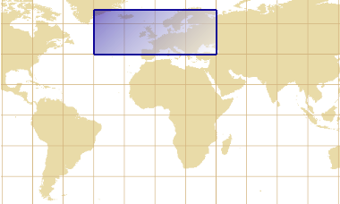

Envelope transformations
Alltransform(…) methods in this class take in account the curvature of the transformed shape.
For example, the shape of a geographic envelope (figure below on the left side) is not rectangular in a
conic projection (figure below on the right side). In order to get the envelope represented by the red
rectangle, projecting the four corners of the geographic envelope is not sufficient since we would miss
the southerner part.
| Envelope before map projection | Shape of the projected envelope |
|---|---|
|  |  |
MathTransform implementations involved in the
operation (directly or indirectly) support derivative,
for more accurate calculation of curve extremum. This is the case of most Apache SIS implementations.
The transform(…) methods in this class expect an arbitrary Envelope with one
of the following arguments: MathTransform, CoordinateOperation or CoordinateReferenceSystem.
The recommended method is the one expecting a CoordinateOperation object,
since it contains sufficient information for handling the cases of envelopes that encompass a pole.
The method expecting a CoordinateReferenceSystem object is merely a convenience method that
infers the coordinate operation itself, but at the cost of performance if the same operation needs
to be applied on many envelopes.
- Since:
- 0.3
- See Also:
-
Method Summary
Modifier and TypeMethodDescriptionstatic EnvelopePuts together a list of envelopes, each of them using an independent coordinate reference system.static CoordinateOperationfindOperation(Envelope source, Envelope target) Finds a mathematical operation from the CRS of the given source envelope to the CRS of the given target envelope.static EnvelopefromWKT(CharSequence wkt) Returns the bounding box of a geometry defined in Well Known Text (WKT) format.static GeneralEnvelopeComputes the intersection of all given envelopes, transforming them to a common CRS if necessary.static StringtoPolygonWKT(Envelope envelope) Formats the given envelope as aPOLYGONelement in the Well Known Text (WKT) format.static StringFormats the given envelope as aBOXelement.toTimeRange(Envelope envelope) Returns the time range of the first dimension associated to a temporal CRS.static Envelopetransform(Envelope envelope, CoordinateReferenceSystem targetCRS) Transforms the given envelope to the specified CRS.static GeneralEnvelopetransform(CoordinateOperation operation, Envelope envelope) Transforms an envelope using the given coordinate operation.static GeneralEnvelopetransform(MathTransform transform, Envelope envelope) Transforms an envelope using the given math transform.static GeneralEnvelopeComputes the union of all given envelopes, transforming them to a common CRS if necessary.static GeneralEnvelope[]wraparound(MathTransform transform, Envelope envelope) Transforms potentially many times an envelope using the given math transform.
-
Method Details
-
compound
Puts together a list of envelopes, each of them using an independent coordinate reference system. The dimension of the returned envelope is the sum of the dimension of all components. If all components have a coordinate reference system, then the returned envelope will have a compound coordinate reference system.- Parameters:
components- the envelopes to aggregate in a single envelope, in the given order.- Returns:
- the aggregation of all given envelopes.
- Throws:
FactoryException- if the geodetic factory failed to create the compound CRS.- Since:
- 1.0
- See Also:
-
union
Computes the union of all given envelopes, transforming them to a common CRS if necessary. If all envelopes use the same CRS (ignoring metadata) or if the CRS of all envelopes isnull, then the union is computed without transforming any envelope. Otherwise all envelopes are transformed to a common CRS before union is computed. The CRS of the returned envelope may different than the CRS of all given envelopes.- Parameters:
envelopes- the envelopes for which to compute union. Null elements are ignored.- Returns:
- union of given envelopes, or
nullif the given array does not contain non-null elements. - Throws:
TransformException- if this method cannot determine a common CRS, or if a transformation failed.- Since:
- 1.0
- See Also:
-
intersect
Computes the intersection of all given envelopes, transforming them to a common CRS if necessary. If all envelopes use the same CRS (ignoring metadata) or if the CRS of all envelopes isnull, then the intersection is computed without transforming any envelope. Otherwise all envelopes are transformed to a common CRS before intersection is computed. The CRS of the returned envelope may different than the CRS of all given envelopes.- Parameters:
envelopes- the envelopes for which to compute intersection. Null elements are ignored.- Returns:
- intersection of given envelopes, or
nullif the given array does not contain non-null elements. - Throws:
TransformException- if this method cannot determine a common CRS, or if a transformation failed.- Since:
- 1.0
- See Also:
-
findOperation
public static CoordinateOperation findOperation(Envelope source, Envelope target) throws FactoryException Finds a mathematical operation from the CRS of the given source envelope to the CRS of the given target envelope. For non-null georeferenced envelopes, this method is equivalent to the following code withareaOfInterestcomputed as the union of the two envelopes:
If at least one envelope is null or has no CRS, then this method returnsreturn CRS.findOperation(CoordinateReferenceSystem, CoordinateReferenceSystem, GeographicBoundingBox) CRS.findOperation(source.getCoordinateReferenceSystem(), target.getCoordinateReferenceSystem(), areaOfInterest)null.- Parameters:
source- the source envelope, ornull.target- the target envelope, ornull.- Returns:
- the mathematical operation from
sourceCRS totargetCRS, ornullif at least one argument is null or has no CRS. - Throws:
OperationNotFoundException- if no operation was found between the given pair of CRS.FactoryException- if the operation cannot be created for another reason.- Since:
- 1.0
- See Also:
-
transform
public static Envelope transform(Envelope envelope, CoordinateReferenceSystem targetCRS) throws TransformException Transforms the given envelope to the specified CRS. If any argument is null, or if the envelope CRS is null or the same instance than the given target CRS, then the given envelope is returned unchanged. Otherwise a new transformed envelope is returned.Performance tip
If there is many envelopes to transform with the same source and target CRS, then it is more efficient to get theCoordinateOperationorMathTransforminstance once and invoke one of the otherstransform(…)methods.- Parameters:
envelope- the envelope to transform (may benull).targetCRS- the target CRS (may benull).- Returns:
- a new transformed envelope, or directly
envelopeif no change was required. - Throws:
TransformException- if a transformation was required and failed.- Since:
- 0.5
-
transform
public static GeneralEnvelope transform(CoordinateOperation operation, Envelope envelope) throws TransformException Transforms an envelope using the given coordinate operation. The transformation is only approximated: the returned envelope may be bigger than the smallest possible bounding box, but should not be smaller in most cases.This method can handle the case where the envelope contains the North or South pole, or when it cross the ±180° longitude.
Usage note
If the envelope CRS is non-null, then the caller should ensure that the operation source CRS is the same than the envelope CRS. In case of mismatch, this method transforms the envelope to the operation source CRS before to apply the operation. This extra step may cause a lost of accuracy. In order to prevent this method from performing such pre-transformation (if not desired), callers can ensure that the envelope CRS isnullbefore to call this method.- Parameters:
operation- the operation to use.envelope- envelope to transform, ornull. This envelope will not be modified.- Returns:
- the transformed envelope, or
nullifenvelopewas null. - Throws:
TransformException- if a transform failed.- Since:
- 0.5
- See Also:
-
transform
public static GeneralEnvelope transform(MathTransform transform, Envelope envelope) throws TransformException Transforms an envelope using the given math transform. The transformation is only approximated: the returned envelope may be bigger than necessary, or smaller than required if the bounding box contains a pole. The coordinate reference system of the returned envelope will be null.Limitation
This method cannot handle the case where the envelope contains the North or South pole. Envelopes crossing the ±180° longitude are handled only if the given transform containsWraparoundTransformsteps; this method does not add such steps itself. For a more robust envelope transformation, usetransform(CoordinateOperation, Envelope)instead.- Parameters:
transform- the transform to use.envelope- envelope to transform, ornull. This envelope will not be modified.- Returns:
- the transformed envelope, or
nullifenvelopewas null. - Throws:
TransformException- if a transform failed.- Since:
- 0.5
- See Also:
-
wraparound
public static GeneralEnvelope[] wraparound(MathTransform transform, Envelope envelope) throws TransformException Transforms potentially many times an envelope using the given math transform. If the given envelope isnull, then this method returns an empty envelope. Otherwise if the transform does not contain anyWraparoundTransformstep, then this method is equivalent totransform(MathTransform, Envelope)returned in an array of length 1. Otherwise this method returns many transformed envelopes where each envelope describes approximately the same region. If the envelope CRS is geographic, the many envelopes are the same envelope shifted by 360° of longitude. If the envelope CRS is projected, then the 360° shifts are applied before the map projection. It may result in very different coordinates.- Parameters:
transform- the transform to use.envelope- envelope to transform, ornull. This envelope will not be modified.- Returns:
- the transformed envelopes, or an empty array if
envelopewas null. - Throws:
TransformException- if a transform failed.- Since:
- 1.3
- See Also:
-
fromWKT
Returns the bounding box of a geometry defined in Well Known Text (WKT) format. This method does not check the consistency of the provided WKT. For example, it does not check that every points in aLINESTRINGhave the same dimension. However, this method ensures that the parenthesis are balanced, in order to catch some malformed WKT. SeeGeneralEnvelope(CharSequence)for more information about the parsing rules.Examples
BOX(-180 -90, 180 90)(not really a geometry, but understood by many software products)POINT(6 10)MULTIPOLYGON(((1 1, 5 1, 1 5, 1 1),(2 2, 3 2, 3 3, 2 2)))GEOMETRYCOLLECTION(POINT(4 6),LINESTRING(3 8,7 10))
- Parameters:
wkt- theBOX,POLYGONor other kind of element to parse.- Returns:
- the envelope of the given geometry.
- Throws:
FactoryException- if the given WKT cannot be parsed.- See Also:
-
toString
Formats the given envelope as aBOXelement. The output is like below, where n is the number of dimensions (omitted if equals to 2):
The string returned by this method can be parsed by theBOXnD(lower corner,upper corner)GeneralEnvelopeconstructor.Note on standards
TheBOXelement is not part of the standard Well Known Text (WKT) format. However, it is understood by many software libraries, for example GDAL and PostGIS.- Parameters:
envelope- the envelope to format.- Returns:
- this envelope as a
BOXorBOX3D(most typical dimensions) element. - See Also:
-
toPolygonWKT
Formats the given envelope as aPOLYGONelement in the Well Known Text (WKT) format.POLYGONcan be used as an alternative toBOXwhen the element needs to be considered as a standard WKT geometry.The string returned by this method can be parsed by the
GeneralEnvelopeconstructor.- Parameters:
envelope- the envelope to format.- Returns:
- the envelope as a
POLYGONin WKT format. - Throws:
IllegalArgumentException- if the given envelope cannot be formatted.- See Also:
-
toTimeRange
Returns the time range of the first dimension associated to a temporal CRS. This convenience method converts floating point values to instants usingDefaultTemporalCRS.toInstant(double).- Parameters:
envelope- envelope from which to extract time range, ornullif none.- Returns:
- time range in the given envelope.
- Since:
- 1.1
- See Also:
-